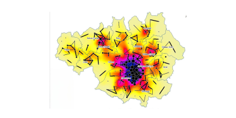

GIS Mapping
I specialize in GIS mapping using QGIS and ArcGIS, performing geospatial analysis and data visualization to create detailed and accurate maps. I love to explore the insight that data can provide us in urban planning, environmental management, and resource allocation.
My Portfolio

Housing and Migraion Patterns
I used ArcGIS and QGIS to analyze 2011 migration and house price data in Greater Manchester, UK, revealing spatial patterns. Identifying problematic patterns aids in improving housing conditions and transportation. The study highlights GIS's value in uncovering spatial relationships in housing markets. Click here to view.
Spatial Migration flows
I used GIS to explore the spatial links between migration, house prices, age, and distance in Greater Manchester, UK, using 2011 data. Visual maps reveal strong connections between migration patterns and house prices, aiding policymakers in identifying trends for informed decision-making.
Click here to view.

Housing search pattern
I used Rightmove plc's data to predict housing trends and employs GIS to explore demand patterns and mismatches. Findings show a link between online views and sales values, informing planners on housing decisions, addressing gaps in analyzing user-generated data and market outcomes.Click here to view.
Ethnic Groups and Migration Patterns
I examined the spatial migration patterns of ethnic groups in the UK using 2021 Census and house price data. I identified migration clusters, mapping these patterns helps link migration to house price clusters, identify problematic trends, and propose solutions to improve the issues faced by these groups.